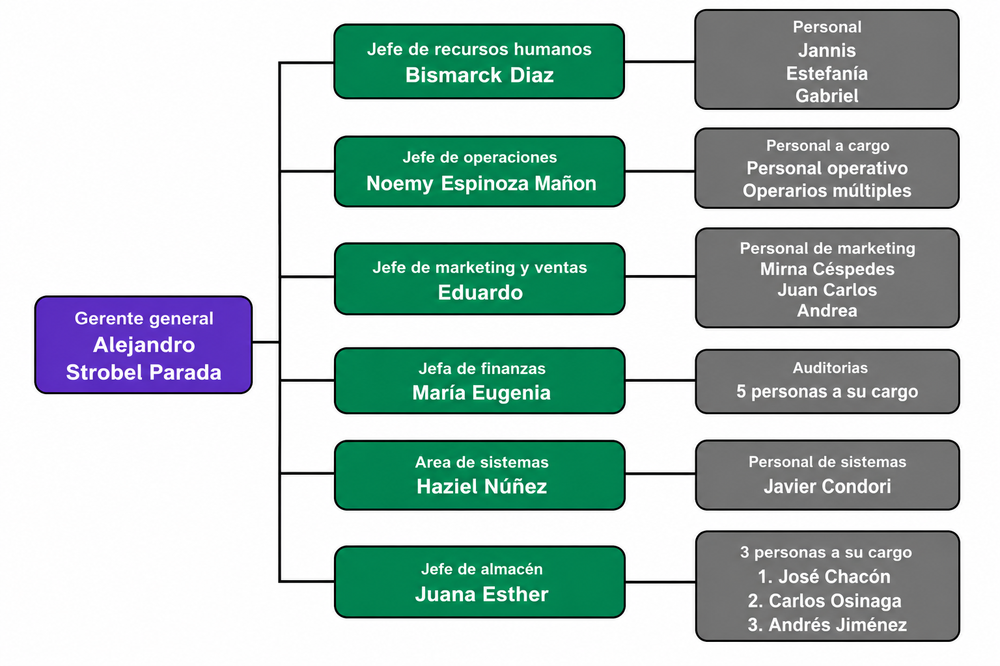
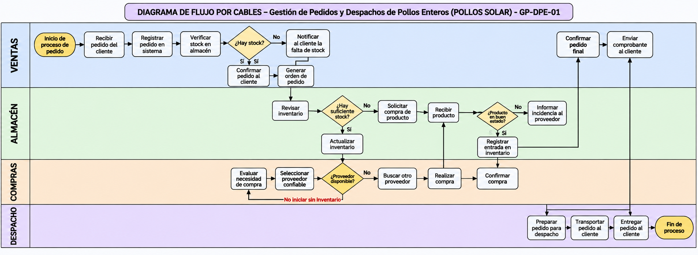

PAES S.R.L. (Pollos El Solar)
Ver Manual| Campo | Detalle |
|---|---|
| Empresa | PAES S.R.L. (Pollos Solar) |
| Nombre del procedimiento | Optimización de la atención de pedidos |
| Procedimiento documentado | Gestión de Pedidos y Despachos de Pollos Enteros |
| Código / versión | GP-DPE-01 |
| Actividad | Empresa gastronómica que abastece una central y entre 15 y 18 sucursales. |
Mejorar la organización, coordinación y control de los procesos de atención de pedidos para reducir errores, retrasos y duplicidad de actividades.
Atiende problemas relacionados con comunicación verbal, errores en pedidos, control insuficiente del inventario y demoras en periodos de alta demanda.
| Alcance | Detalle |
|---|---|
| Inicio | Recepción del pedido |
| Fin | Entrega al cliente |
| Áreas | Ventas, Almacén, Compras y Despacho |

El organigrama muestra la estructura organizativa actual de PAES S.R.L.
| Área | Puesto y responsable | Personal a cargo | Responsabilidades y decisiones |
|---|---|---|---|
| Gerencia General | Alejandro Strobel Parada | Jefaturas de área | Aprueba el procedimiento y resuelve casos especiales. |
| Operaciones | Noemy Espinoza Mañon | Personal operativo y operarios múltiples | Gestiona requerimientos e insumos y coordina el transporte. |
| Marketing y Ventas | Eduardo | Mirna Céspedes, Juan Carlos y Andrea | Recibe pedidos, verifica información y emite órdenes de despacho. |
| Almacén | Juana Esther | José Chacón, Carlos Osinaga y Andrés Jiménez | Control de stock, inventario y autorización de salidas. |
| Compras | Encargado de Compras | - | Solicita cotizaciones y autoriza reposiciones. |
| Despacho | Responsable de Despacho | - | Prepara y entrega pedidos. |
| Finanzas | María Eugenia | Auditorías (5 personas) | Control y auditoría de registros. |
| Sistemas | Haziel Núñez | Javier Condori | Soporte tecnológico. |
| Recursos Humanos | Bismarck Díaz | Jannis, Estefanía y Gabriel | Capacitación e implementación. |
| Campo de la Ficha Técnica | Descripción |
|---|---|
| Nombre del procedimiento | Gestión de Pedidos y Despachos de Pollos Enteros |
| Código / Versión | GP-DPE-01 |
| Fecha de elaboración | 20/11/2026 |
| Objetivo | Atender los pedidos de los clientes de manera rápida, organizada y eficiente para garantizar la entrega oportuna de los productos. |
| Alcance | Desde la recepción del pedido del cliente hasta la entrega final del producto solicitado. |
| Área responsable principal | Ventas |
| Áreas participantes | Ventas, Almacén, Compras y Despacho. |
| Activador del procedimiento | Recepción de un pedido por parte del cliente. |
| Entradas (datos/materiales) | Pedido del cliente, datos del cliente, inventario disponible y productos en almacén. |
| Salidas / Resultado | Pedido entregado correctamente y cliente satisfecho. |
| Documentos y registros | Pedido de venta, orden de compra, reporte de inventario, orden de despacho y guía de despacho. |
| Responsabilidades por área | Ventas recibe pedidos. Almacén verifica existencias. Compras realiza reposiciones. Despacho prepara y entrega los productos. |
| Puntos de control | Verificación de datos del cliente, validación del stock disponible y revisión de cantidades entregadas. |
| Autorizaciones y límites de decisión | Almacén autoriza salida de productos. Compras aprueba reposiciones. Casos excepcionales son escalados a Gerencia. |
| Excepciones y rutas alternativas | Falta de stock, demoras de proveedores, errores de recepción o cancelación de pedidos. |
| Indicador 1 | Pedidos entregados a tiempo (%) = (Pedidos entregados a tiempo / Total de pedidos) × 100 |
| Indicador 2 | Cumplimiento de pedidos (%) = (Pedidos completos entregados / Total de pedidos recibidos) × 100 |
| Elaboró / Revisó / Aprobó | Asistente de Ventas / Jefe de Operaciones / Gerente General |
Haz clic sobre la imagen para ampliarla.

| Nº | Carril | Acción o decisión | Símbolo |
|---|---|---|---|
| 1 | Ventas | Inicio de recepción de pedido | Óvalo |
| 2 | Ventas | Recibir pedido de 50 pollos enteros | Entrada/Salida |
| 3 | Ventas | Registrar pedido en sistema | Documento |
| 4 | Ventas | Verificar datos del cliente | Proceso |
| 5 | Ventas | ¿Datos completos? | Decisión |
| 6 | Ventas | Solicitar información faltante | Proceso |
| 7 | Ventas | Esperar respuesta | Demora |
| 8 | Ventas | Enviar solicitud de stock | Documento |
| 9 | Almacén | Revisar existencia | Proceso |
| 10 | Almacén | ¿Existe stock suficiente? | Decisión |
| 11 | Almacén | Reservar pedido | Proceso |
| 12 | Almacén | Emitir reporte | Documento |
| 13 | Almacén | Comunicar faltante | Documento |
| 14 | Compras | Revisar proveedores | Proceso |
| 15 | Compras | Solicitar cotización | Documento |
| 16 | Compras | ¿Entrega a tiempo? | Decisión |
| 17 | Compras | Emitir orden de compra | Documento |
| 18 | Compras | Esperar proveedor | Demora |
| 19 | Almacén | Recibir productos | Proceso |
| 20 | Almacén | ¿Cantidad correcta? | Decisión |
| 21 | Almacén | Registrar incidencia | Documento |
| 22 | Compras | Gestionar reposición | Proceso |
| 23 | Almacén | Actualizar inventario | Proceso |
| 24 | Almacén | Confirmar disponibilidad total | Documento |
| 25 | Ventas | Confirmar fecha de entrega | Proceso |
| 26 | Ventas | Emitir orden de despacho | Documento |
| 27 | Despacho | Preparar pedido | Proceso |
| 28 | Despacho | Verificar cantidad y destino | Proceso |
| 29 | Despacho | Emitir guía | Documento |
| 30 | Despacho | Fin del proceso | Óvalo |
Recomendaciones para la aplicación a través del modelo del cambio planeado segun Kotler.
Mostrar al personal casos reales de retrasos, pedidos omitidos y errores de
inventario causados por la comunicación verbal en horas de alta demanda.
Conformar un equipo impulsor con el gerente general, el jefe de operaciones,
el jefe de marketing y ventas, el jefe de almacén y el área de sistemas.
Definir como visión que todo pedido se registre digitalmente y tenga
responsables y controles claros desde su recepción hasta su entrega.
Explicar objetivos y beneficios a Ventas, Almacén, Compras y Despacho,
con apoyo de recursos humanos.
Capacitar al personal en el procedimiento y en el sistema de registro, y
atender la resistencia al cambio, las fallas técnicas y la falta de recursos.
Realizar una prueba piloto antes de la implementación total y dar a conocer
sus resultados, como la reducción de errores.
Ajustar el procedimiento según los indicadores y las sugerencias de los
trabajadores, y extenderlo de forma gradual.
Incluir el manual en la inducción del personal, mantener vigente la ficha técnica
y acompañar a los equipos durante las primeras semanas de uso.